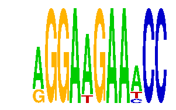

family_21 |
|---|
|  |
| Download PWM |
| Download instances (motifs) |
| Show motif distribution |
Query_ID | Query_Consensus | Subject_Name | Source_DB | Subject_ID | Length | Orientation | Offset | Divergence | Overlap | Subject_Consensus |
|---|---|---|---|---|---|---|---|---|---|---|
| family_21 | AGGAAGAAACC | SPIB | JASPAR | MA0081.1 | 7 | as given | -2 | 0.395 | 5 | AGMGGAA |
| family_21 | AGGAAGAAACC | Stat3 | JASPAR | MA0144.1 | 10 | as given | -4 | 0.578 | 6 | TTCCAGGAAG |
| family_21 | AGGAAGAAACC | MZF1_1-4 | JASPAR | MA0056.1 | 6 | as given | -2 | 0.722 | 4 | NGGGGA |
| family_21 | AGGAAGAAACC | KTGGYRSGAA | JASPAR | PF0112 | 10 | as given | -5 | 0.877 | 5 | TTGGCGGGAA |
Sequence | Start_position (from start) | Start_position (from end) | Average conservation | Best conservation score | Instance_with_best_CS | Best_Z-score | Instance_with_best_ZS | Strand |
|---|---|---|---|---|---|---|---|---|
| chr10:76637699-76638699 | 640 | 651 | 0.101909 | 0.108 | RGGAAGAAWCC | 12.722097 | RGGAAGAAWCC | 1 |
| chr8:42054800-42057300 | 1760 | 1771 | 0.00563636 | 0.012 | AGGAWGAAMCC | 14.438022 | RGGAWGAAACC | 1 |
| chr3:122936800-122937902 | 383 | 394 | 0.00381818 | 0.009 | RGGAWGAAACC | 12.722097 | RGGAAGAAWCC | -1 |
| chr17:82178932-82182200 | 2971 | 2982 | 0.0456364 | 0.124 | RGGAWGAAACC | 12.722097 | RGGAAGAAWCC | 1 |
| chr17:27003900-27006500 | 1709 | 1720 | 0.00109091 | 0.003 | RGGAWGAAACC | 12.722097 | RGGAAGAAWCC | 1 |
| chr10:53044723-53046400 | 939 | 950 | 0.00118182 | 0.003 | RGGAWGAAACC | 12.722097 | RGGAAGAAWCC | 1 |
| chr13:12287900-12289800 | 1755 | 1766 | 0.0132727 | 0.031 | AGGAWGAAMCC | 14.438022 | RGGAWGAAACC | 1 |
| chr5:122918996-122920100 | 136 | 147 | 0.144909 | 0.156 | AGGAWGAAMCC | 14.438022 | RGGAWGAAACC | 1 |
| chr11:109541300-109544000 | 1142 | 1153 | 0.000636364 | 0.001 | RGGAWGAAACC | 12.722097 | RGGAAGAAWCC | 1 |
| chr2:68047500-68050489 | 2505 | 2516 | 1 | 1 | RGGAAGAAWCC | 14.438022 | RGGAWGAAACC | 1 |
| chr9:67275800-67277200 | 703 | 714 | 0.00436364 | 0.015 | AGGAWGAAMCC | 16.888458 | AGGAWGAAMCC | 1 |
| chr17:12997400-12998517 | 264 | 275 | 0.0342727 | 0.054 | AGGAWGAAMCC | 12.722097 | RGGAAGAAWCC | 1 |
| chr13:12128224-12131300 | 815 | 826 | 0.00445455 | 0.01 | AGGAWGAAMCC | 16.888458 | AGGAWGAAMCC | 1 |
| chr2:90956900-90959121 | 1462 | 1473 | 0.996818 | 1 | RGGAWGAAACC | 12.722097 | RGGAAGAAWCC | 1 |
| chr3:101573772-101575200 | 662 | 673 | 0.000181818 | 0.001 | RGGAAGAAWCC | 12.722097 | RGGAAGAAWCC | 1 |